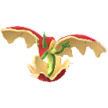
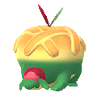
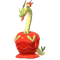
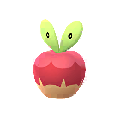
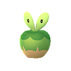

포켓몬고 과사삭벌레 진화 애프룡 단지래플 과미르 사과 사탕 총정리, 과미드라 조건까지
과사삭벌레 사탕을 모으다가 막상 진화 버튼 앞에서 한참 멈칫했는데요, 갈래가 세 개나 되니까 뭘 눌러야 할지 감이 안 오더라고요. 과사삭벌레는 사과 속에 사는 풀/드래곤타입 포켓몬이에요. 오늘은 애프룡·단지래플·과미르, 그리고 과미르에서 이어지는 과미드라까지 진화에 뭐가 얼마나 필요한지 한 번에 정리해 볼게요~
과사삭벌레 진화 조건, 사탕 200개랑 사과 20개가 기본이에요
과사삭벌레는 과사삭벌레 사탕 200개와 사과 20개를 쓰면 애프룡, 단지래플, 과미르 중 하나로 진화합니다. 어느 갈래가 되는지는 사과 종류가 정해주는데요, 새콤한사과면 애프룡, 달콤한사과면 단지래플, 꿀맛사과면 과미르가 돼요. 과미드라만 조건이 따로 붙거든요, 그래서 표 맨 아래에 같이 묶어뒀어요.
| 진화 결과 | 사탕 | 사과·조건 |
|---|---|---|
 애프룡 | 200개 | 새콤한사과 20개 |
 단지래플 | 200개 | 달콤한사과 20개 |
| 과미르 | 200개 | 꿀맛사과 20개 |
 과미드라 | 400개 | 과미르를 파트너(버디)로 설정, 드래곤타입 포켓몬 7마리 포획 |
이미지 출처: Serebii
루어모듈은 진화 아이템이 아니라 사과를 모으는 데 쓰는 거잖아요, 그래서 진화 버튼을 누르는 순간에는 필요 없답니다.
사과는 어디서 구하나요, 허브 루어모듈이 제일 편해요
사과는 허브 루어모듈을 꽂은 포켓스톱 주변이나 지도에 떠 있는 야생 사과를 탭해서 구할 수 있어요. 구하는 길은 이렇게 세 가지예요.
- 허브 루어모듈이 꽂힌 포켓스톱 주변에 뜨는 사과 탭하기
- 지도에 떠 있는 야생 사과 탭하기(포켓몬이 튀어나와서 조우하는 경우도 있어요)
- 이벤트 리서치로 사과와 과사삭벌레 만나기
갈래마다 사과가 20개씩 필요해서 한 종류만 키울 거면 20개, 세 종류를 다 보려면 60개를 모아야 하는데요 ㅎㅎ 저도 요즘은 지도에 사과가 보이면 일단 탭하고 보는데요, 허브 루어모듈을 켜면 사과만 나오는 기간에 몰아서 챙기는 쪽이 훨씬 마음 편하겠더라고요.
과미르에서 과미드라로, 파트너랑 드래곤 7마리가 필요해요
과미드라로 진화시키려면 과미르를 파트너로 설정하고, 드래곤타입 포켓몬을 7마리 잡은 뒤, 과사삭벌레 사탕 400개를 쓰면 됩니다.
사과 20개에 사탕 200개로 끝나던 앞 단계에 비하면, 이 마지막 단계는 사탕 부담이 확실히 다르죠~
애프룡 단지래플 과미르, 어떤 갈래를 고를까요
세 갈래 모두 전투용이라기보다 도감과 수집용으로 보는 게 맞아서, 마음에 드는 모습이나 사과부터 골라도 괜찮아요. 과사삭벌레는 최대 CP가 레벨 40 기준 약 714, 레벨 50 기준 약 807이고 기술 구성도 단출해서, 풀/드래곤 공격수로는 다른 포켓몬에 밀린다는 평이 많더라고요. 진화형들도 레이드 상위권으로 꼽히는 편은 아니에요. 과사삭벌레의 기본 정보만 짚어두면 이래요.
- 약점: 얼음이 가장 크고 벌레·비행·독·드래곤·페어리도 약점
- 저항: 땅·물·풀·전기
- 기술: 놀래키기·발버둥
그래서 저라면 하나만 먼저 키워서 도감을 채우고, 나머지는 사탕 여유가 생길 때 도전할 것 같아요. 한 갈래만 키우면 사탕 200개인데요, 과사삭벌레에서 과미르를 거쳐 과미드라까지 갈 때는 사탕 600개(200+400)가 들어요. 세 갈래를 전부 모을 경우에는 사탕 1,000개(200개씩 세 번에 과미드라 400개)까지 늘어나니, 사탕 모으는 속도부터 가늠해 보세요~
과사삭벌레 라인은 언제부터 포켓몬GO에 있었나요
과사삭벌레와 애프룡, 단지래플은 2025년 4월에, 과미르와 과미드라는 같은 해 10월에 포켓몬GO에 처음 등장했어요. 한국시간 기준으로 정리하면 이렇습니다.
- 2025년 4월 24일(목) 10:00 ~ 4월 29일(화) 20:00: 과사삭벌레·애프룡·단지래플 첫 등장
- 2025년 10월 10일(금) 10:00 ~ 10월 16일(목) 20:00: 수확 축제 2025에서 과미르·과미드라 첫 등장
그러니까 이 라인이 처음 풀린 지 1년 반쯤 지났는데, 이번 수확 축제 2026에서 색이 다른(이로치) 과사삭벌레까지 풀리면서 한 번 더 주목받는 거라고 보시면 돼요.
수확 축제 2026, 이로치 과사삭벌레가 처음 나와요
이로치 과사삭벌레는 수확 축제 2026에서 포켓몬GO에 처음 등장하고, 한국시간으로 9월 29일(화) 오전 10시부터 10월 5일(월) 오후 8시까지 진행돼요. 오늘이 10월 3일이니 월요일 저녁까지 이틀 남짓 남았네요. 저도 이번 주말에 허브 루어모듈 하나 켜놓고 이로치를 노려볼 생각이에요 ㅎㅎ 이번 이벤트에서 챙길 만한 건 다음과 같아요.
- 운이 좋으면 이로치 과사삭벌레 첫 만남
- 이로치 미니브 출현 확률 증가
- 허브 루어모듈을 쓰면 사과만 출현
- 야생에서 탐리스·맛보돈·미니브·과사삭벌레 등장
| 일반 과사삭벌레 | 이로치 과사삭벌레 |
|---|---|
 |  |
일반은 빨간 사과, 이로치는 초록 사과라서 한눈에 구분돼요.
이미지 출처: Serebii
이번에 처음 이로치로 나오는 건 과사삭벌레예요. 이로치 확률은 아직 알려진 게 없어요, 확인되는 대로 다시 정리해 드릴게요.
자주 묻는 질문
Q. 이름 트릭으로 갈래를 고를 수 있나요?
이름 트릭이나 시간, 날씨 같은 별도 조건은 아직 알려진 게 없어요. 이브이 진화는 닉네임이랑 루어모듈로 갈래가 갈렸다 보니 같은 방식이려니 하고 헷갈리기 쉬운데요, 과사삭벌레는 사과 아이템으로 가는 쪽이라 메커니즘이 아예 다릅니다.
Q. 알에서도 나오고 레이드에서도 나오나요?
알 부화 거리와 레이드 등장 여부는 아직 알려진 게 없어요. 앱 인게임에서 직접 확인해 보시는 게 정확해요.
Q. 과사삭벌레 파트너 거리는 몇 km인가요?
5km 정도로 알려져 있어요. 정확한 거리는 파트너로 지정한 뒤 앱 화면에서 보시면 돼요.
Q. 허브 루어모듈은 영어로 뭔가요?
영문판에서는 Mossy Lure Module이라고 불러요. 해외 사이트에서 사과 얻는 법을 찾아보실 때 이 이름으로 검색하면 편합니다.
Q. 수확 축제가 끝나면 사과 이벤트가 또 열리나요?
다음 사과 이벤트는 아직 일정이 나오지 않았어요.
과사삭벌레 진화 정리
정리하면 사탕 200개에 사과 20개로 세 갈래 중 하나를 고르고, 과미드라는 과미르를 파트너로 둔 채 드래곤타입 7마리를 잡아 사탕 400개를 쓰면 되는 구조예요. 월요일 저녁 8시까지는 사과가 잘 풀리는 기간이니, 사과를 넉넉히 모아두기엔 이번 주말이 딱 좋은 타이밍이랍니다. 다들 즐겁게 사과 따러 다녀오세요!
참고한 곳
· 포켓몬GO 공식 뉴스 — 수확 축제 2026
· 포켓몬GO 공식 뉴스 — 수확 축제 2025
· 포켓몬GO 공식 뉴스 — 2025년 4월 사과 이벤트
· 포켓몬 도감 — 과사삭벌레(gameinfo)
· 포켓몬 도감 — Applin(Pokémon GO Hub)
✔ 포켓몬GO 같이 보기 좋은 내용
· 포켓몬고 그림자 랜드로스 화신폼 레이드 카운터 공략, 졸업스킬 약점 총정리까지
· 포켓몬고 10월이벤트 2026 레이드 로테이션 총정리, 조로아 커뮤니티데이 시간부터 핼러윈까지
· 포켓몬고 이브이진화 종류 8가지 만드는법 이름트릭 버디 루어모듈 총정리